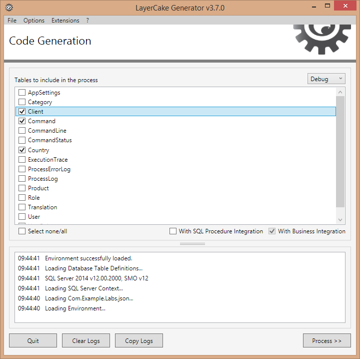
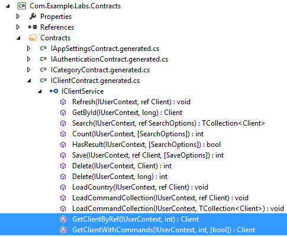

Duration: ~20mins
The Business classes are used to define all the business methods (at server-side) implemented by the developers.
The Business layer can use the predefined Crud methods (Search, Save, etc.). However it is recommanded to use stored procedures for advanced requests (see in a next lab).
In this Lab we are going to add 2 new Client methods
Open the Com.Example.Labs.Business project.
Open the ClientBusiness.custom.cs file and add the two following methods (and System.Linq namespace).
[BusinessMethod] public Client GetClientByRef(IUserContext userContext, int clientRef) { Client client = null; var options = new SearchOptions(); options.Filters.Add(Client.ColumnNames.Ref, FilterOperator.Equals, clientRef); // search filter on Ref column using (var et = new ExecutionTracerService()) // track time execution of GetClientByRef() method using (var db = new ClientCrud(userContext)) // access to the data layer { var clients = db.Search(ref options); if (!clients.IsNullOrEmpty()) { client = clients[0]; } } return client; }
[BusinessMethod] public Client GetClientWithCommands(IUserContext userContext, int clientRef, bool withProducts = false) { var client = this.GetClientByRef(userContext, clientRef); if (client != null) { using (var et = new ExecutionTracerService()) using (var dbClient = new ClientCrud(userContext)) using (var dbCommand = new CommandCrud(userContext)) { dbClient.LoadCommandCollection(ref client); // retrieve all the commands of the client (-> client.CommandCollection) client.CommandCollection.AsParallel().AsOrdered().ForEach(command => // .AsParallel() -> PLINQ feature { var currentCommand = command; dbCommand.LoadCommandStatus(ref currentCommand); if (withProducts) // retrieve commandlines and products { dbCommand.LoadCommandLineCollection(ref currentCommand); using (var dbCommandLine = new CommandLineCrud(userContext)) { currentCommand.CommandLineCollection.AsParallel().AsOrdered().ForEach(commandLine => { var currentCommandLine = commandLine; dbCommandLine.LoadProduct(ref currentCommandLine); }); } } }); } } return client; }
Compile the Com.Example.Labs.Business project (this step is required before executing LayerCake Generator).
Execute LayerCake Generator.
Note: because we are working on business layer the With SQL Procedure Integration option can be unchecked.
The business methods have been integrated to the Services & WCF layers and can be called from the clients!
using (var service = new ServiceProxy<IClientService>()) { var client = service.Proxy.GetClientWithCommands(ClientContext.Anonymous, clientRef: 1234, withProducts: true); if (client != null) { Console.WriteLine("{0} {1} ({2}) - {3}", client.Firstname, client.Lastname, client.Ref, client.Email); Console.WriteLine("{0} Command(s)", client.CommandCollection.Count); client.CommandCollection.ForEach(command => { command.CommandLineCollection.ForEach(commandLine => { Console.WriteLine(" -> {0} ({1}e)", commandLine.Product.Name, commandLine.Product.Price); }); }); } }
Note: the ForEach extension method checks whether the collection is null before enumerate the elements.
Full code for test purposes
namespace Com.Example.Labs.FirstStepsConsole { using Com.Example.Labs.ClientCore; using Com.Example.Labs.Contracts; using Com.Example.Labs.Core; using Com.Example.Labs.Models; using System; using System.Collections.Generic; using System.Linq; class Program { private static IUserContext _userContext = ClientContext.Anonymous; static void Main(string[] args) { PurgeData(); CreateData(); using (var service = new ServiceProxy<IClientService>()) { var client = service.Proxy.GetClientWithCommands(_userContext, clientRef: 1234, withProducts: true); if (client != null) { Console.WriteLine("{0} {1} ({2}) - {3}", client.Firstname, client.Lastname, client.Ref, client.Email); Console.WriteLine("{0} Command(s)", client.CommandCollection.Count); client.CommandCollection.ForEach(command => { command.CommandLineCollection.ForEach(commandLine => { Console.WriteLine(" -> {0} ({1}e)", commandLine.Product.Name, commandLine.Product.Price); }); }); } } Console.ReadLine(); } // Store the category in database private static bool CreateCategory(IUserContext userContext, ref Category category) { IList<TranslationEnum> errors; if (category != null && category.IsValid(out errors)) using (var service = new ServiceProxy<ICategoryService>()) return service.Proxy.Save(userContext, ref category) > 0; return false; } // Store the product in database private static bool CreateProduct(IUserContext userContext, ref Product product) { IList<TranslationEnum> errors; if (product != null && product.IsValid(out errors)) using (var service = new ServiceProxy<IProductService>()) return service.Proxy.Save(userContext, ref product) > 0; return false; } // Store the client in database private static bool CreateClient(IUserContext userContext, ref Client client) { IList<TranslationEnum> errors; if (client != null && client.IsValid(out errors)) using (var service = new ServiceProxy<IClientService>()) return service.Proxy.Save(userContext, ref client) > 0; return false; } // Store the country in database private static bool CreateCountry(IUserContext userContext, ref Country country) { IList<TranslationEnum> errors; if (country != null && country.IsValid(out errors)) using (var service = new ServiceProxy<ICountryService>()) return service.Proxy.Save(userContext, ref country) > 0; return false; } // Store the commandStatus in database private static bool CreateCommandStatus(IUserContext userContext, ref CommandStatus commandStatus) { IList<TranslationEnum> errors; if (commandStatus != null && commandStatus.IsValid(out errors)) using (var service = new ServiceProxy<ICommandStatusService>()) return service.Proxy.Save(userContext, ref commandStatus) > 0; return false; } // Create data for tests private static void CreateData() { // 1. Create root Catgory: Smartphones // ---------------------------------------------------------------- var rootCategory = new Category { CodeRef = "Smartphones" }; rootCategory.Name.EN = "Smartphones"; rootCategory.Name.FR = "Téléphones Mobiles"; CreateCategory(_userContext, ref rootCategory); // 2. Create child Catgory: Smartphones > Windows Phone // ---------------------------------------------------------------- var wpCategory = new Category { IdCategoryParent = rootCategory.Id, CodeRef = "WindowsPhone" }; wpCategory.Name.EN = "Windows Phone"; wpCategory.Name.FR = "Windows Phone"; CreateCategory(_userContext, ref wpCategory); // 3. Create child Catgory: Smartphones > Android // ---------------------------------------------------------------- var adCategory = new Category { IdCategoryParent = rootCategory.Id, CodeRef = "Android" }; adCategory.Name.EN = "Android"; adCategory.Name.FR = "Android"; CreateCategory(_userContext, ref adCategory); // 4. Create Product: Microsoft Lumia 735 // ---------------------------------------------------------------- var mlProduct = new Product { IdCategory = wpCategory.Id, Ref = "WPML735BLACK", Price = 189.90M, IsAvailable = false }; mlProduct.Name.EN = "Microsoft Lumia 735 Black"; mlProduct.Name.FR = "Microsoft Lumia 735 Noir"; CreateProduct(_userContext, ref mlProduct); // 5. Create Product: Samsung Galaxy S5 // ---------------------------------------------------------------- var sgProduct = new Product { IdCategory = adCategory.Id, Ref = "SGS5WHITE", Price = 589.90M, IsAvailable = true }; sgProduct.Name.EN = "Samsung Galaxy S5 White"; sgProduct.Name.FR = "Samsung Galaxy S5 Blanc"; CreateProduct(_userContext, ref sgProduct); // 6. Create CommandStatus: Preparing // ---------------------------------------------------------------- var commandStatus = new CommandStatus { CodeRef = "Preparing", Description = "Preparing" }; CreateCommandStatus(_userContext, ref commandStatus); // 7. Create CommandStatus: Sent // ---------------------------------------------------------------- commandStatus = new CommandStatus { CodeRef = "Sent", Description = "Sent" }; CreateCommandStatus(_userContext, ref commandStatus); // 8. Create Country: France // ---------------------------------------------------------------- var country = new Country(); country.Name.EN = "France"; country.Name.FR = "France"; CreateCountry(_userContext, ref country); // 8. Create Client // ---------------------------------------------------------------- var client = new Client { IdCountry = country.Id, Firstname = "John", Lastname = "Doe", Email = "john.doe@skynet.net", Ref = 1234 }; CreateClient(_userContext, ref client); // 9. Create Command + 2 CommandLines // ---------------------------------------------------------------- var command = new Command { Ref = "johndoe.0001", Date = DateTime.Now, IsPaid = false }; command.IdClient = client.Id; command.IdCommandStatus = commandStatus.Id; // Sent command.CommandLineCollection.Add(new CommandLine { Command = command, IdProduct = mlProduct.Id }); command.CommandLineCollection.Add(new CommandLine { Command = command, IdProduct = sgProduct.Id }); // Because the Command is not stored yet in database -> CommandId == 0 // So we can't write command.CommandLineCollection.Add(new CommandLine { CommandId = command.Id, IdProduct = mlProduct.Id }); using (var service = new ServiceProxy<ICommandService>()) { service.Proxy.Save(_userContext, ref command, new SaveOptions { SaveChildren = true }); } } // Delete all existing data private static void PurgeData() { using (var service = new ServiceProxy<ICommandLineService>()) { var options = new SearchOptions(); foreach (var record in service.Proxy.Search(_userContext, ref options)) service.Proxy.Delete(_userContext, record.Id); } using (var service = new ServiceProxy<ICommandService>()) { var options = new SearchOptions(); foreach (var record in service.Proxy.Search(_userContext, ref options)) service.Proxy.Delete(_userContext, record.Id); } using (var service = new ServiceProxy<ICommandStatusService>()) { var options = new SearchOptions(); foreach (var record in service.Proxy.Search(_userContext, ref options)) service.Proxy.Delete(_userContext, record.Id); } using (var service = new ServiceProxy<IClientService>()) { var options = new SearchOptions(); foreach (var record in service.Proxy.Search(_userContext, ref options)) service.Proxy.Delete(_userContext, record.Id); } using (var service = new ServiceProxy<ICountryService>()) { var options = new SearchOptions(); foreach (var record in service.Proxy.Search(_userContext, ref options)) service.Proxy.Delete(_userContext, record.Id); } using (var service = new ServiceProxy<IProductService>()) { var options = new SearchOptions(); foreach (var record in service.Proxy.Search(_userContext, ref options)) service.Proxy.Delete(_userContext, record.Id); } using (var service = new ServiceProxy<ICategoryService>()) { var options = new SearchOptions(); var categories = service.Proxy.Search(_userContext, ref options); // Really ugly! :) foreach (var record in categories.Where(c => c.IdCategoryParent != null)) service.Proxy.Delete(_userContext, record.Id); foreach (var record in service.Proxy.Search(_userContext, ref options)) service.Proxy.Delete(_userContext, record.Id); } } } }